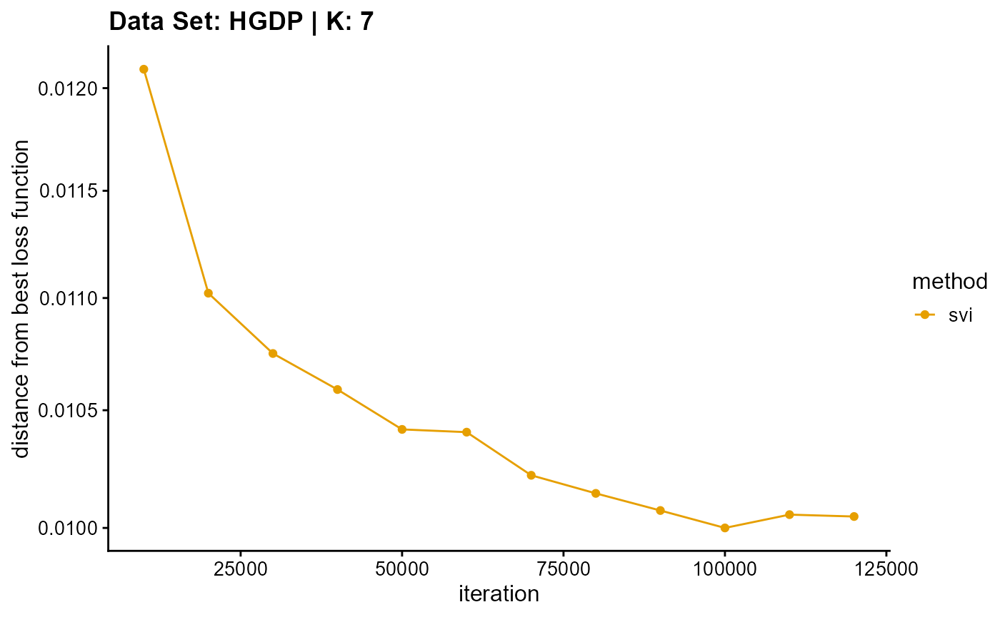
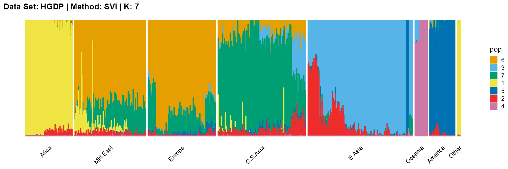

Applications III: HGDP Data Set
Jonathon Chow
2022-10-04
Source:vignettes/12_application_hgdp.Rmd
12_application_hgdp.RmdIntroduction
A group of scientists at Stanford University have collaborated on a large study to understand genetic diversity in human populations. They analyzed genomic DNA from 1,043 individuals from around the world, determining their genotypes at more than 650,000 SNP loci, with the Illumina BeadStation technology. Genomic DNA samples from these fully-consenting individuals were collected by the Human Genome Diversity Project (HGDP), in a collaboration with the Centre Etude Polymorphism Humain (CEPH) in Paris. The collection they tested is referred to as the “HGDP-CEPH Human Genome Diversity Cell Line Panel” (Cann et al. 2002). They represent 51 different populations from Africa, Europe, the Middle East, South and Central Asia, East Asia, Oceania and the Americas. The HGDP includes the 51 populations from around the world (Li et al. 2008). A description of the populations that were studied can be found in a 2005 review paper by Cavalli-Sforza (Cavalli-Sforza 2005). See here for more information.
Data Sources and Preprocessing
We use the Harvard HGDP-CEPH data (Lu et al.
2011). We download the data in PLINK format from here.
We rename all_snp.map and all_snp.ped to
HGDP.map and HGDP.ped. Then, we use the PLINK
code plink --file HGDP --make-bed --out HGDP to construct
the binary file. We end up with the following file.
HGDP
├── HGDP.bed
├── HGDP.bim
├── HGDP.fam
├── HGDP.map
├── HGDP.ped We use the R package genio to read in the PLINK format
document and convert the gene data into a genotype matrix, each element
of which represents the observed number of copies of minor allele at
marker j of person i. The rows of the matrix represent individuals and
the columns of the matrix represent SNPs. Now we preprocess the data. We
first remove the rows with a missing rate greater than 0.5%, and then we
assign the remaining missing values to the mode, which is 0. In order to
ensure the feasibility of the iterative algorithm, we delete rows with
the same row value. We store the processed data as
data_HGDP_full.rda.
library(genio)
# Load data HGDP.
HGDP <- read_plink('HGDP/HGDP.bed')
data_HGDP_full <- HGDP$X
# Filters rows with missing values.
NA_HGDP <- which(rowSums(is.na(data_HGDP_full)) > 0)
# Remove rows with more than 0.5% NA.
data_HGDP_full <- data_HGDP_full[which(rowMeans(is.na(data_HGDP_full)) < 0.005), ]
# Assign the missing value to 0.
data_HGDP_full[is.na(data_HGDP_full)] <- 0
# Delete rows with the same row value.
same_HGDP <- vector()
for(i in 1:nrow(data_HGDP_full))
{
if(length(unique(data_HGDP_full[i, ])) == 1)
{
same_HGDP <- c(same_HGDP, i)
}
}
data_HGDP_full <- data_HGDP_full[-same_HGDP, ]
# Save data.
save(data_HGDP_full, file="data_HGDP_full.rda") In order to simplify the data processing and conform to the setting
of the model, we randomly selected 5000 SNPs from the complete data and
transposed the matrix. We stored these data as
data_HGDP.rda.
# A random sample of 5000 SNPs.
data_HGDP <- t(data_HGDP_full[sample(c(1:nrow(data_HGDP_full)), 5000), ])
# Save data.
save(data_HGDP, file="data_HGDP.rda") To make it easier to group the data, we make corresponding tables
HGDP.txt with three columns for individuals and populations
of the HGDP dataset on the basis of document
sample_all_snp.txt and a 2008 paper (Li et al. 2008). Superpop
represents large populations, such as Asians, Africans, Europeans.
Pop represents small populations, such as Chinese, British,
Norwegian. Indiv represents individuals.
We read this table into R and store it as
map_HGDP.rda.
# Reading a MAP File.
map_HGDP <- read.table("HGDP.txt", header=T, sep="\t")
# Save data.
save(map_HGDP, file="map_HGDP.rda") data_HGDP.rda and map_HGDP.rda are the
built-in data of AwesomePackage. You can find more information at
Reference in AwesomePackage.
Fit the Data
We use the following four algorithms to fit the sampled data for
different K, and collect the evaluation indicators of the
fitting results.
EM algorithm
result_HGDP_em_K2 <- psd_fit_em(data_HGDP, 2, 1e-5, 2000)
# [============>--------------------------------------------------] 400/2000 ( 1m)
result_HGDP_em_K3 <- psd_fit_em(data_HGDP, 3, 1e-5, 2000)
# [===============>-----------------------------------------------] 500/2000 ( 3m)
result_HGDP_em_K4 <- psd_fit_em(data_HGDP, 4, 1e-5, 2000)
# [==============>------------------------------------------------] 480/2000 ( 4m)
result_HGDP_em_K5 <- psd_fit_em(data_HGDP, 5, 1e-5, 2000)
# [=======================>---------------------------------------] 750/2000 ( 9m)
result_HGDP_em_K6 <- psd_fit_em(data_HGDP, 6, 1e-5, 2000)
# [=========================>-------------------------------------] 830/2000 (13m)
result_HGDP_em_K7 <- psd_fit_em(data_HGDP, 7, 1e-5, 2000)
# [=======================================>----------------------] 1300/2000 (27m)
result_HGDP_em_K8 <- psd_fit_em(data_HGDP, 8, 1e-5, 2000)
# [===================>-------------------------------------------] 620/2000 (15m)
result_HGDP_em_K9 <- psd_fit_em(data_HGDP, 9, 1e-5, 2000)
# [========================>--------------------------------------] 780/2000 (25m)
result_HGDP_em_K10 <- psd_fit_em(data_HGDP, 10, 1e-5, 2000)
# [=========================>-------------------------------------] 830/2000 (34m)
result_HGDP_em_K11 <- psd_fit_em(data_HGDP, 11, 1e-5, 2000)
# [================================>-----------------------------] 1070/2000 ( 1h)
result_HGDP_em_K12 <- psd_fit_em(data_HGDP, 12, 1e-5, 2000)
# [========================>--------------------------------------] 800/2000 (44m)
result_HGDP_em_K13 <- psd_fit_em(data_HGDP, 13, 1e-5, 2000)
# [===========================>-----------------------------------] 900/2000 ( 1h)
result_HGDP_em_K14 <- psd_fit_em(data_HGDP, 14, 1e-5, 2000)
# [===============================>------------------------------] 1020/2000 ( 1h)
result_HGDP_em_K15 <- psd_fit_em(data_HGDP, 15, 1e-5, 2000)
# [================================>-----------------------------] 1050/2000 ( 1h) We store the result as result_HGDP_em.RData.
SQP algorithm
result_HGDP_sqp_K2 <- psd_fit_sqp(data_HGDP, 2, 1e-5, 200, 200)
# [================================================================] 200/200 (40s)
# [=========>-------------------------------------------------------] 30/200 (28s)
result_HGDP_sqp_K3 <- psd_fit_sqp(data_HGDP, 3, 1e-5, 200, 200)
# [================================================================] 200/200 ( 1m)
# [=========>-------------------------------------------------------] 30/200 ( 1m)
result_HGDP_sqp_K4 <- psd_fit_sqp(data_HGDP, 4, 1e-5, 200, 200)
# [================================================================] 200/200 ( 2m)
# [============>----------------------------------------------------] 40/200 ( 2m)
result_HGDP_sqp_K5 <- psd_fit_sqp(data_HGDP, 5, 1e-5, 200, 200)
# [================================================================] 200/200 ( 2m)
# [===============>-------------------------------------------------] 50/200 ( 5m)
result_HGDP_sqp_K6 <- psd_fit_sqp(data_HGDP, 6, 1e-5, 200, 200)
# [================================================================] 200/200 ( 3m)
# [============>----------------------------------------------------] 40/200 ( 5m)
result_HGDP_sqp_K7 <- psd_fit_sqp(data_HGDP, 7, 1e-5, 200, 500)
# [================================================================] 500/500 (10m)
# [=========>-------------------------------------------------------] 30/200 ( 5m)
result_HGDP_sqp_K8 <- psd_fit_sqp(data_HGDP, 8, 1e-5, 200, 500)
# [================================================================] 500/500 (13m)
# [===============>-------------------------------------------------] 50/200 (12m)
result_HGDP_sqp_K9 <- psd_fit_sqp(data_HGDP, 9, 1e-5, 200, 500)
# [================================================================] 500/500 (15m)
# [===============================================>----------------] 150/200 (44m)
result_HGDP_sqp_K10 <- psd_fit_sqp(data_HGDP, 10, 1e-5, 200, 500)
# [================================================================] 500/500 (20m)
# [============>----------------------------------------------------] 40/200 (15m)
result_HGDP_sqp_K11 <- psd_fit_sqp(data_HGDP, 11, 1e-5, 200, 500)
# [================================================================] 500/500 (24m)
# [==================================>-----------------------------] 110/200 ( 1h)
result_HGDP_sqp_K12 <- psd_fit_sqp(data_HGDP, 12, 1e-5, 200, 800)
# [================================================================] 800/800 (44m)
# [===================>---------------------------------------------] 60/200 (36m)
result_HGDP_sqp_K13 <- psd_fit_sqp(data_HGDP, 13, 1e-5, 200, 800)
# [================================================================] 800/800 ( 1h)
# [=========================>---------------------------------------] 80/200 ( 1h)
result_HGDP_sqp_K14 <- psd_fit_sqp(data_HGDP, 14, 1e-5, 200, 800)
# [================================================================] 800/800 ( 1h)
# [===============>-------------------------------------------------] 50/200 (43m)
result_HGDP_sqp_K15 <- psd_fit_sqp(data_HGDP, 15, 1e-5, 200, 800)
# [================================================================] 800/800 ( 1h)
# [===============>-------------------------------------------------] 50/200 ( 1h) We store the result as result_HGDP_sqp.RData.
VI algorithm
result_HGDP_vi_K2 <- psd_fit_vi(data_HGDP, 2, 1e-5, 2000)
# [================================>-----------------------------] 1070/2000 ( 3m)
result_HGDP_vi_K3 <- psd_fit_vi(data_HGDP, 3, 1e-5, 2000)
# [============>--------------------------------------------------] 410/2000 ( 1m)
result_HGDP_vi_K4 <- psd_fit_vi(data_HGDP, 4, 1e-5, 2000)
# [========================>--------------------------------------] 800/2000 ( 3m)
result_HGDP_vi_K5 <- psd_fit_vi(data_HGDP, 5, 1e-5, 2000)
# [================================>-----------------------------] 1060/2000 ( 5m)
result_HGDP_vi_K6 <- psd_fit_vi(data_HGDP, 6, 1e-5, 2000)
# [==============================>--------------------------------] 990/2000 ( 5m)
result_HGDP_vi_K7 <- psd_fit_vi(data_HGDP, 7, 1e-5, 2000)
# [============================>----------------------------------] 910/2000 ( 5m)
result_HGDP_vi_K8 <- psd_fit_vi(data_HGDP, 8, 1e-5, 2000)
# [=============================>---------------------------------] 960/2000 ( 6m)
result_HGDP_vi_K9 <- psd_fit_vi(data_HGDP, 9, 1e-5, 2000)
# [=================================>----------------------------] 1090/2000 ( 7m)
result_HGDP_vi_K10 <- psd_fit_vi(data_HGDP, 10, 1e-5, 2000)
# [=================================>----------------------------] 1090/2000 ( 8m)
result_HGDP_vi_K11 <- psd_fit_vi(data_HGDP, 11, 1e-5, 2000)
# [====================================>-------------------------] 1200/2000 ( 9m)
result_HGDP_vi_K12 <- psd_fit_vi(data_HGDP, 12, 1e-5, 2000)
# [============================>----------------------------------] 930/2000 ( 8m)
result_HGDP_vi_K13 <- psd_fit_vi(data_HGDP, 13, 1e-5, 2000)
# [==============================>-------------------------------] 1010/2000 ( 9m)
result_HGDP_vi_K14 <- psd_fit_vi(data_HGDP, 14, 1e-5, 2000)
# [==============================================>---------------] 1520/2000 (14m)
result_HGDP_vi_K15 <- psd_fit_vi(data_HGDP, 15, 1e-5, 2000)
# [====================================>-------------------------] 1190/2000 (12m) We store the result as result_HGDP_vi.RData.
SVI algorithm
result_HGDP_svi_K2_sample <- psd_fit_svi(data_HGDP, 2,
1e-5, 5e+5, 1e+4, 3,
100, 2000,
5e-2, 1e-1,
1, 0.5)
# [=========>--------------------------------------------------] 80000/5e+05 ( 8m)
result_HGDP_svi_K3_sample <- psd_fit_svi(data_HGDP, 3,
1e-5, 5e+5, 1e+4, 3,
100, 2000,
5e-2, 1e-1,
1, 0.5)
# [=================>-----------------------------------------] 150000/5e+05 (16m)
result_HGDP_svi_K4_sample <- psd_fit_svi(data_HGDP, 4,
1e-5, 5e+5, 1e+4, 3,
100, 2000,
5e-2, 1e-1,
1, 0.5)
# [==========================>--------------------------------] 230000/5e+05 (28m)
result_HGDP_svi_K5_sample <- psd_fit_svi(data_HGDP, 5,
1e-5, 5e+5, 1e+4, 3,
100, 2000,
5e-2, 1e-1,
1, 0.5)
# [==================>----------------------------------------] 160000/5e+05 (22m)
result_HGDP_svi_K6_sample <- psd_fit_svi(data_HGDP, 6,
1e-5, 5e+5, 1e+4, 3,
100, 2000,
5e-2, 1e-1,
1, 0.5)
# [===============================>---------------------------] 270000/5e+05 (40m)
result_HGDP_svi_K7_sample <- psd_fit_svi(data_HGDP, 7,
1e-5, 5e+5, 1e+4, 3,
100, 2000,
5e-2, 1e-1,
1, 0.5)
# [=============>---------------------------------------------] 120000/5e+05 (20m)
result_HGDP_svi_K8_sample <- psd_fit_svi(data_HGDP, 8,
1e-5, 5e+5, 1e+4, 3,
100, 2000,
5e-2, 1e-1,
1, 0.5)
# [===========>------------------------------------------------] 1e+05/5e+05 (17m)
result_HGDP_svi_K9_sample <- psd_fit_svi(data_HGDP, 9,
1e-5, 5e+5, 1e+4, 3,
100, 2000,
5e-2, 1e-1,
1, 0.5)
# [===================>---------------------------------------] 170000/5e+05 (31m)
result_HGDP_svi_K10_sample <- psd_fit_svi(data_HGDP, 10,
1e-5, 5e+5, 1e+4, 3,
100, 2000,
5e-2, 1e-1,
1, 0.5)
# [================================>--------------------------] 280000/5e+05 ( 1h)
result_HGDP_svi_K11_sample <- psd_fit_svi(data_HGDP, 11,
1e-5, 5e+5, 1e+4, 3,
100, 2000,
5e-2, 1e-1,
1, 0.5)
# [==============>--------------------------------------------] 130000/5e+05 (26m)
result_HGDP_svi_K12_sample <- psd_fit_svi(data_HGDP, 12,
1e-5, 5e+5, 1e+4, 3,
100, 2000,
5e-2, 1e-1,
1, 0.5)
# [=====================>-------------------------------------] 190000/5e+05 (41m)
result_HGDP_svi_K13_sample <- psd_fit_svi(data_HGDP, 13,
1e-5, 5e+5, 1e+4, 3,
100, 2000,
5e-2, 1e-1,
1, 0.5)
# [========================================>------------------] 350000/5e+05 ( 1h)
result_HGDP_svi_K14_sample <- psd_fit_svi(data_HGDP, 14,
1e-5, 5e+5, 1e+4, 3,
100, 2000,
5e-2, 1e-1,
1, 0.5)
# [==========>-------------------------------------------------] 90000/5e+05 (21m)
result_HGDP_svi_K15_sample <- psd_fit_svi(data_HGDP, 15,
1e-5, 5e+5, 1e+4, 3,
100, 2000,
5e-2, 1e-1,
1, 0.5)
# [===========================================>---------------] 370000/5e+05 ( 2h) We store the result as result_HGDP_svi.RData.
Evaluation indicators
loglikelihood_HGDP_em <- vector()
error_HGDP_em <- vector()
for (i in 2:15)
{
result <- get(paste("result_HGDP_em_K", i, sep=""))
loglikelihood_HGDP_em <- c(loglikelihood_HGDP_em,
result$L[length(result$L)])
error_HGDP_em <- c(error_HGDP_em,
psd_error(data_HGDP, result))
}
rm(result)
rm(i)
loglikelihood_HGDP_sqp <- vector()
error_HGDP_sqp <- vector()
for (i in 2:15)
{
result <- get(paste("result_HGDP_sqp_K", i, sep=""))
loglikelihood_HGDP_sqp <- c(loglikelihood_HGDP_sqp,
result$L[length(result$L)])
error_HGDP_sqp <- c(error_HGDP_sqp,
psd_error(data_HGDP, result))
}
rm(result)
rm(i)
ELBO_HGDP_vi <- vector()
loglikelihood_HGDP_vi <- vector()
error_HGDP_vi <- vector()
for (i in 2:15)
{
result <- get(paste("result_HGDP_vi_K", i, sep=""))
ELBO_HGDP_vi <- c(ELBO_HGDP_vi,
result$L[length(result$L)])
loglikelihood_HGDP_vi <- c(loglikelihood_HGDP_vi,
psd_loglikelihood(data_HGDP, result))
error_HGDP_vi <- c(error_HGDP_vi,
psd_error(data_HGDP, result))
}
rm(result)
rm(i)
ind_J <- sample(2, ncol(data_HGDP), replace = TRUE, prob = c(1 - 5e-2, 5e-2))
ind_I <- sample(2, nrow(data_HGDP), replace = TRUE, prob = c(1 - 1e-1, 1e-1))
data_HGDP_val <- data_HGDP[ind_I == 2, ind_J == 2]
loglikelihood_HGDP_svi <- vector()
for (i in 2:15)
{
P_val <- get(paste("result_HGDP_svi_K", i, "_sample", sep=""))$P[ind_I == 2, ]
loglikelihood_HGDP_svi <- c(loglikelihood_HGDP_svi,
psd_loglikelihood_svi(data_HGDP_val, i, P_val))
}
rm(ind_J)
rm(ind_I)
rm(data_HGDP_val)
rm(P_val)
rm(i) We store the result as result_HGDP_evaluate.RData.
Choose K
We import the data directly.
load(system.file("extdata", "result_HGDP_evaluate.RData", package = "AwesomePackage", mustWork = TRUE)) Criteria for choosing K: When there is no obvious gap
in indicators, the smaller K is preferred.
plot_index_vs_K(list(loglikelihood_HGDP_em, loglikelihood_HGDP_sqp, loglikelihood_HGDP_vi),
c("em", "sqp", "vi"), index.id = "loglik") We notice that the log-likelihood curves of EM and SQP have a
continuous upward trend, which is due to the fact that there is no prior
distribution constraint, which is prone to overfitting. The
log-likelihood curves of EM and SQP slow down from K equals
7.
The log-likelihood curve of VI flattens out from about
K equals 6, and shows that the optimal K is 8
and 11.
plot_index_vs_K(list(loglikelihood_HGDP_svi),
"svi", index.id = "loglik") The log-likelihood curve of SVI is relatively irregular for three
reasons. First, we use different training and validation sets to fit
different K. Although we finally fixed the validation set
when calculating the log-likelihood on the validation set, this was
based on the assumption that the data are equivalent. Second, our
convergence criterion may be relatively loose, resulting in some cases
that do not really converge to the optimal value. Third, the sensitivity
of the algorithm to the initial value leads to large errors in a single
measurement.
The log-likelihood curve of SVI shows that the optimal
K is 11 and 14, and 8, 9, 10, and 11 are all good choices
for K.
plot_index_vs_K(list(error_HGDP_em, error_HGDP_sqp, error_HGDP_vi),
c("em", "sqp", "vi"), index.id = "error")The error curves of EM, SQP and VI are almost identical with the log-likelihood curves of EM, SQP and VI. This is because the error function is computed based on the entire training set. The way to make it meaningful is to compute the error function on the validation set (which is not involved in training) and then evaluate the algorithm using either normal validation or cross validation.
plot_index_vs_K(list(ELBO_HGDP_vi),
"vi", index.id = "elbo")
The ELBO curve of VI shows the curve oscillating from
K equals 7.
In conclusion, we note that when K is around 7, the
fit is already doing very well. The optimal K should be
reached around 11, but from the structure diagram, the populations
appear redundant at this time.
Full Data
We only fit the complete data for the relatively good
K using SVI algorithm.
result_HGDP_svi_K7_full <- psd_fit_svi(t(data_HGDP_full), 7,
1e-5, 1e+6, 1e+4, 5,
100, 2000,
5e-3, 1e-1,
1, 0.5)
# [======>----------------------------------------------------] 120000/1e+06 (24m)
result_HGDP_svi_K8_full <- psd_fit_svi(t(data_HGDP_full), 8,
1e-5, 1e+6, 1e+4, 5,
100, 2000,
5e-3, 1e-1,
1, 0.5)
# [======>----------------------------------------------------] 120000/1e+06 (25m)
result_HGDP_svi_K9_full <- psd_fit_svi(t(data_HGDP_full), 9,
1e-5, 1e+6, 1e+4, 5,
100, 2000,
5e-3, 1e-1,
1, 0.5)
# [==================>----------------------------------------] 320000/1e+06 ( 1h)
result_HGDP_svi_K10_full <- psd_fit_svi(t(data_HGDP_full), 10,
1e-5, 1e+6, 1e+4, 5,
100, 2000,
5e-3, 1e-1,
1, 0.5)
# [==============>--------------------------------------------] 250000/1e+06 ( 1h)
result_HGDP_svi_K11_full <- psd_fit_svi(t(data_HGDP_full), 11,
1e-5, 1e+6, 1e+4, 5,
100, 2000,
5e-3, 1e-1,
1, 0.5)
# [=====>-----------------------------------------------------] 110000/1e+06 (29m) In addition, we iterated for a million times for the case of the
best K (equals 7 and 11).
result_HGDP_svi_K7_full_million <- psd_fit_svi(t(data_HGDP_full), 7,
1e-9, 1e+6, 1e+5, 10,
100, 2000,
5e-3, 1e-1,
1, 0.5)
# [============================================================] 1e+06/1e+06 ( 3h)
result_HGDP_svi_K11_full_million <- psd_fit_svi(t(data_HGDP_full), 11,
1e-9, 1e+6, 1e+5, 10,
100, 2000,
5e-3, 1e-1,
1, 0.5)
# [============================================================] 1e+06/1e+06 ( 4h) We store the result as result_HGDP_full.RData. Then we
import the data directly.
load(system.file("extdata", "result_HGDP_full.RData", package = "AwesomePackage", mustWork = TRUE))
label <- rownames(data_HGDP)
lpop <- unlist(map_HGDP[1])
spop <- unlist(map_HGDP[2])
indiv <- unlist(map_HGDP[3])
plot_structure(result_HGDP_svi_K7_full$P,
label = label, map.indiv = indiv, map.pop = lpop, gap = 5,
title = "Data Set: HGDP (full) | Method: SVI | K: 7")
plot_structure(result_HGDP_svi_K8_full$P,
label = label, map.indiv = indiv, map.pop = lpop, gap = 5,
title = "Data Set: HGDP (full) | Method: SVI | K: 8")
plot_structure(result_HGDP_svi_K9_full$P,
label = label, map.indiv = indiv, map.pop = lpop, gap = 5,
title = "Data Set: HGDP (full) | Method: SVI | K: 9")
plot_structure(result_HGDP_svi_K10_full$P,
label = label, map.indiv = indiv, map.pop = lpop, gap = 5,
title = "Data Set: HGDP (full) | Method: SVI | K: 10")
plot_structure(result_HGDP_svi_K11_full$P,
label = label, map.indiv = indiv, map.pop = lpop, gap = 5,
title = "Data Set: HGDP (full) | Method: SVI | K: 11") For the best K (equals 7 and 11), we
draw more subtle structures. We can compare with the results in the
articles (Li et al. 2008; Raj, Stephens, and
Pritchard 2014; Gopalan et al. 2016), and the structure diagram
is almost the same.
plot_structure(result_HGDP_svi_K7_full_million$P,
label = label, map.indiv = indiv, map.pop = spop, gap = 2, font.size = 6,
title = "Data Set: HGDP (full) | Method: SVI (1e+6 interations) | K: 7")
plot_structure(result_HGDP_svi_K11_full_million$P,
label = label, map.indiv = indiv, map.pop = spop, gap = 2, font.size = 6,
title = "Data Set: HGDP (full) | Method: SVI (1e+6 interations) | K: 11")Algorithm Evaluation
Convergence accuracy
For suitable K, the SVI algorithm and SQP algorithm
perform best in terms of convergence accuracy, followed by VI algorithm
and finally EM algorithm. See Get started in AwesomePackage
for details.
For the unknown K, due to the lack of prior
constraints, the EM algorithm and SQP algorithm are prone to overfitting
when the population number is redundant. We can see this clearly in Appendix B. Therefore, we had better use VI
algorithm and SVI algorithm to select the appropriate
K.
Convergence efficiency
In addition to measuring the accuracy of convergence, we still need to consider the efficiency of convergence. We have two indicators to measure the convergence efficiency, which are convergence speed (the number of iterations required to achieve convergence) and convergence time (the time required for a single iteration). We can plot the convergence time using the code below, and we can see the convergence speed plots in Appendix A.
L <- list(c(1,3,4,9,13,27,15,25,34,60,44,60,60,60),
c(1,2,4,7,8,15,25,59,35,84,80,120,103,120),
c(3,1,3,5,5,5,6,7,8,9,8,9,14,12),
c(8,16,28,22,40,20,17,31,60,26,41,60,21,120))
plot_index_vs_K(L, c("em", "sqp", "vi", "svi"), index.id = "time",
title = "Data Set: HGDP") EM algorithm is poor in terms of convergence time and convergence
speed, and the convergence time increases rapidly with the increase of
K.
Although SQP algorithm has a good performance in terms of
convergence speed, the convergence time of the unaccelerated SQP
algorithm is extremely slow, which increases rapidly with the increase
of K.
VI algorithm has similar convergence speed with EM algorithm (both
of them have poor performance), but in terms of convergence time, VI
algorithm has excellent performance, especially with the increase of
K, the required time increases slowly.
Due to different principles, we only consider the convergence time
for the SVI algorithm. Although the performance of convergence time of
SVI algorithm is poor on small data sets, the time of SVI algorithm is
almost only related to the length of single sampling (the number of
individuals), that is to say, for complete data sets, the convergence
time of SVI is almost unchanged. This means that SVI has irreplaceable
advantages for large data sets. Meanwhile, similar to VI algorithm, the
change of convergence time of SVI algorithm is relatively insensitive to
K. By the way, compared with other algorithms, the
convergence time of SVI algorithm is irregular due to the randomness of
sampling.
Algorithm selection criteria
In conclusion, we should consider both algorithm accuracy and algorithm efficiency.
For small data sets, we can get good results by using VI directly. Or we can first use VI algorithm to reach the vicinity of the optimal value, and then use SQP algorithm to improve the convergence accuracy. The reason why the SQP algorithm is not directly used here is that the unaccelerated SQP algorithm is inefficient and the SQP algorithm is extremely easy to converge to local minima.
For large data sets, we use the SVI algorithm without question.
Of course, if K is unknown, we should pick
K first, in the same way as above.
Literature Cited
Appendix A
load(system.file("extdata", "result_HGDP_em.RData", package = "AwesomePackage", mustWork = TRUE))
load(system.file("extdata", "result_HGDP_sqp.RData", package = "AwesomePackage", mustWork = TRUE))
load(system.file("extdata", "result_HGDP_vi.RData", package = "AwesomePackage", mustWork = TRUE))
load(system.file("extdata", "result_HGDP_svi.RData", package = "AwesomePackage", mustWork = TRUE))
plot_loss(list(result_HGDP_em_K2$Loss[-1], result_HGDP_sqp_K2$Loss[-1],
result_HGDP_vi_K2$Loss[-1]), c("em", "em & sqp", "vi"), 10,
title = "Data Set: HGDP | K: 2")
plot_loss(list(result_HGDP_em_K3$Loss[-1], result_HGDP_sqp_K3$Loss[-1],
result_HGDP_vi_K3$Loss[-1]), c("em", "em & sqp", "vi"), 10,
title = "Data Set: HGDP | K: 3")
plot_loss(list(result_HGDP_em_K4$Loss[-1], result_HGDP_sqp_K4$Loss[-1],
result_HGDP_vi_K4$Loss[-1]), c("em", "em & sqp", "vi"), 10,
title = "Data Set: HGDP | K: 4")
plot_loss(list(result_HGDP_em_K5$Loss[-1], result_HGDP_sqp_K5$Loss[-1],
result_HGDP_vi_K5$Loss[-1]), c("em", "em & sqp", "vi"), 10,
title = "Data Set: HGDP | K: 5")
plot_loss(list(result_HGDP_em_K6$Loss[-1], result_HGDP_sqp_K6$Loss[-1],
result_HGDP_vi_K6$Loss[-1]), c("em", "em & sqp", "vi"), 10,
title = "Data Set: HGDP | K: 6")
plot_loss(list(result_HGDP_em_K7$Loss[-1], result_HGDP_sqp_K7$Loss[-1],
result_HGDP_vi_K7$Loss[-1]), c("em", "em & sqp", "vi"), 10,
title = "Data Set: HGDP | K: 7")
plot_loss(list(result_HGDP_em_K8$Loss[-1], result_HGDP_sqp_K8$Loss[-1],
result_HGDP_vi_K8$Loss[-1]), c("em", "em & sqp", "vi"), 10,
title = "Data Set: HGDP | K: 8")
plot_loss(list(result_HGDP_em_K9$Loss[-1], result_HGDP_sqp_K9$Loss[-1],
result_HGDP_vi_K9$Loss[-1]), c("em", "em & sqp", "vi"), 10,
title = "Data Set: HGDP | K: 9")
plot_loss(list(result_HGDP_em_K10$Loss[-1], result_HGDP_sqp_K10$Loss[-1],
result_HGDP_vi_K10$Loss[-1]), c("em", "em & sqp", "vi"), 10,
title = "Data Set: HGDP | K: 10")
plot_loss(list(result_HGDP_em_K11$Loss[-1], result_HGDP_sqp_K11$Loss[-1],
result_HGDP_vi_K11$Loss[-1]), c("em", "em & sqp", "vi"), 10,
title = "Data Set: HGDP | K: 11")
plot_loss(list(result_HGDP_em_K12$Loss[-1], result_HGDP_sqp_K12$Loss[-1],
result_HGDP_vi_K12$Loss[-1]), c("em", "em & sqp", "vi"), 10,
title = "Data Set: HGDP | K: 12")
plot_loss(list(result_HGDP_em_K13$Loss[-1], result_HGDP_sqp_K13$Loss[-1],
result_HGDP_vi_K13$Loss[-1]), c("em", "em & sqp", "vi"), 10,
title = "Data Set: HGDP | K: 13")
plot_loss(list(result_HGDP_em_K14$Loss[-1], result_HGDP_sqp_K14$Loss[-1],
result_HGDP_vi_K14$Loss[-1]), c("em", "em & sqp", "vi"), 10,
title = "Data Set: HGDP | K: 14")Appendix B
EM algorithm
plot_structure(result_HGDP_em_K2$P,
label = label, map.indiv = indiv, map.pop = lpop, gap = 5,
title = "Data Set: HGDP | Method: EM | K: 2")
plot_structure(result_HGDP_em_K3$P,
label = label, map.indiv = indiv, map.pop = lpop, gap = 5,
title = "Data Set: HGDP | Method: EM | K: 3")
plot_structure(result_HGDP_em_K4$P,
label = label, map.indiv = indiv, map.pop = lpop, gap = 5,
title = "Data Set: HGDP | Method: EM | K: 4")
plot_structure(result_HGDP_em_K5$P,
label = label, map.indiv = indiv, map.pop = lpop, gap = 5,
title = "Data Set: HGDP | Method: EM | K: 5")
plot_structure(result_HGDP_em_K6$P,
label = label, map.indiv = indiv, map.pop = lpop, gap = 5,
title = "Data Set: HGDP | Method: EM | K: 6")
plot_structure(result_HGDP_em_K7$P,
label = label, map.indiv = indiv, map.pop = lpop, gap = 5,
title = "Data Set: HGDP | Method: EM | K: 7")
plot_structure(result_HGDP_em_K8$P,
label = label, map.indiv = indiv, map.pop = lpop, gap = 5,
title = "Data Set: HGDP | Method: EM | K: 8")
plot_structure(result_HGDP_em_K9$P,
label = label, map.indiv = indiv, map.pop = lpop, gap = 5,
title = "Data Set: HGDP | Method: EM | K: 9")
plot_structure(result_HGDP_em_K10$P,
label = label, map.indiv = indiv, map.pop = lpop, gap = 5,
title = "Data Set: HGDP | Method: EM | K: 10")
plot_structure(result_HGDP_em_K11$P,
label = label, map.indiv = indiv, map.pop = lpop, gap = 5,
title = "Data Set: HGDP | Method: EM | K: 11")
plot_structure(result_HGDP_em_K12$P,
label = label, map.indiv = indiv, map.pop = lpop, gap = 5,
title = "Data Set: HGDP | Method: EM | K: 12")
plot_structure(result_HGDP_em_K13$P,
label = label, map.indiv = indiv, map.pop = lpop, gap = 5,
title = "Data Set: HGDP | Method: EM | K: 13")
plot_structure(result_HGDP_em_K14$P,
label = label, map.indiv = indiv, map.pop = lpop, gap = 5,
title = "Data Set: HGDP | Method: EM | K: 14")
plot_structure(result_HGDP_em_K15$P,
label = label, map.indiv = indiv, map.pop = lpop, gap = 5,
title = "Data Set: HGDP | Method: EM | K: 15")
SQP algorithm
plot_structure(result_HGDP_sqp_K2$P,
label = label, map.indiv = indiv, map.pop = lpop, gap = 5,
title = "Data Set: HGDP | Method: SQP | K: 2")
plot_structure(result_HGDP_sqp_K3$P,
label = label, map.indiv = indiv, map.pop = lpop, gap = 5,
title = "Data Set: HGDP | Method: SQP | K: 3")
plot_structure(result_HGDP_sqp_K4$P,
label = label, map.indiv = indiv, map.pop = lpop, gap = 5,
title = "Data Set: HGDP | Method: SQP | K: 4")
plot_structure(result_HGDP_sqp_K5$P,
label = label, map.indiv = indiv, map.pop = lpop, gap = 5,
title = "Data Set: HGDP | Method: SQP | K: 5")
plot_structure(result_HGDP_sqp_K6$P,
label = label, map.indiv = indiv, map.pop = lpop, gap = 5,
title = "Data Set: HGDP | Method: SQP | K: 6")
plot_structure(result_HGDP_sqp_K7$P,
label = label, map.indiv = indiv, map.pop = lpop, gap = 5,
title = "Data Set: HGDP | Method: SQP | K: 7")
plot_structure(result_HGDP_sqp_K8$P,
label = label, map.indiv = indiv, map.pop = lpop, gap = 5,
title = "Data Set: HGDP | Method: SQP | K: 8")
plot_structure(result_HGDP_sqp_K9$P,
label = label, map.indiv = indiv, map.pop = lpop, gap = 5,
title = "Data Set: HGDP | Method: SQP | K: 9")
plot_structure(result_HGDP_sqp_K10$P,
label = label, map.indiv = indiv, map.pop = lpop, gap = 5,
title = "Data Set: HGDP | Method: SQP | K: 10")
plot_structure(result_HGDP_sqp_K11$P,
label = label, map.indiv = indiv, map.pop = lpop, gap = 5,
title = "Data Set: HGDP | Method: SQP | K: 11")
plot_structure(result_HGDP_sqp_K12$P,
label = label, map.indiv = indiv, map.pop = lpop, gap = 5,
title = "Data Set: HGDP | Method: SQP | K: 12")
plot_structure(result_HGDP_sqp_K13$P,
label = label, map.indiv = indiv, map.pop = lpop, gap = 5,
title = "Data Set: HGDP | Method: SQP | K: 13")
plot_structure(result_HGDP_sqp_K14$P,
label = label, map.indiv = indiv, map.pop = lpop, gap = 5,
title = "Data Set: HGDP | Method: SQP | K: 14")
plot_structure(result_HGDP_sqp_K15$P,
label = label, map.indiv = indiv, map.pop = lpop, gap = 5,
title = "Data Set: HGDP | Method: SQP | K: 15")

VI algorithm
plot_structure(result_HGDP_vi_K2$P,
label = label, map.indiv = indiv, map.pop = lpop, gap = 5,
title = "Data Set: HGDP | Method: VI | K: 2")
plot_structure(result_HGDP_vi_K3$P,
label = label, map.indiv = indiv, map.pop = lpop, gap = 5,
title = "Data Set: HGDP | Method: VI | K: 3")
plot_structure(result_HGDP_vi_K4$P,
label = label, map.indiv = indiv, map.pop = lpop, gap = 5,
title = "Data Set: HGDP | Method: VI | K: 4")
plot_structure(result_HGDP_vi_K5$P,
label = label, map.indiv = indiv, map.pop = lpop, gap = 5,
title = "Data Set: HGDP | Method: VI | K: 5")
plot_structure(result_HGDP_vi_K6$P,
label = label, map.indiv = indiv, map.pop = lpop, gap = 5,
title = "Data Set: HGDP | Method: VI | K: 6")
plot_structure(result_HGDP_vi_K7$P,
label = label, map.indiv = indiv, map.pop = lpop, gap = 5,
title = "Data Set: HGDP | Method: VI | K: 7")
plot_structure(result_HGDP_vi_K8$P,
label = label, map.indiv = indiv, map.pop = lpop, gap = 5,
title = "Data Set: HGDP | Method: VI | K: 8")
plot_structure(result_HGDP_vi_K9$P,
label = label, map.indiv = indiv, map.pop = lpop, gap = 5,
title = "Data Set: HGDP | Method: VI | K: 9")
plot_structure(result_HGDP_vi_K10$P,
label = label, map.indiv = indiv, map.pop = lpop, gap = 5,
title = "Data Set: HGDP | Method: VI | K: 10")
plot_structure(result_HGDP_vi_K11$P,
label = label, map.indiv = indiv, map.pop = lpop, gap = 5,
title = "Data Set: HGDP | Method: VI | K: 11")
plot_structure(result_HGDP_vi_K12$P,
label = label, map.indiv = indiv, map.pop = lpop, gap = 5,
title = "Data Set: HGDP | Method: VI | K: 12")
plot_structure(result_HGDP_vi_K13$P,
label = label, map.indiv = indiv, map.pop = lpop, gap = 5,
title = "Data Set: HGDP | Method: VI | K: 13")
plot_structure(result_HGDP_vi_K14$P,
label = label, map.indiv = indiv, map.pop = lpop, gap = 5,
title = "Data Set: HGDP | Method: VI | K: 14")
plot_structure(result_HGDP_vi_K15$P,
label = label, map.indiv = indiv, map.pop = lpop, gap = 5,
title = "Data Set: HGDP | Method: VI | K: 15")SVI algorithm
plot_structure(result_HGDP_svi_K2_sample$P,
label = label, map.indiv = indiv, map.pop = lpop, gap = 5,
title = "Data Set: HGDP | Method: SVI | K: 2")
plot_structure(result_HGDP_svi_K3_sample$P,
label = label, map.indiv = indiv, map.pop = lpop, gap = 5,
title = "Data Set: HGDP | Method: SVI | K: 3")
plot_structure(result_HGDP_svi_K4_sample$P,
label = label, map.indiv = indiv, map.pop = lpop, gap = 5,
title = "Data Set: HGDP | Method: SVI | K: 4")
plot_structure(result_HGDP_svi_K5_sample$P,
label = label, map.indiv = indiv, map.pop = lpop, gap = 5,
title = "Data Set: HGDP | Method: SVI | K: 5")
plot_structure(result_HGDP_svi_K6_sample$P,
label = label, map.indiv = indiv, map.pop = lpop, gap = 5,
title = "Data Set: HGDP | Method: SVI | K: 6")
plot_structure(result_HGDP_svi_K7_sample$P,
label = label, map.indiv = indiv, map.pop = lpop, gap = 5,
title = "Data Set: HGDP | Method: SVI | K: 7")
plot_structure(result_HGDP_svi_K8_sample$P,
label = label, map.indiv = indiv, map.pop = lpop, gap = 5,
title = "Data Set: HGDP | Method: SVI | K: 8")
plot_structure(result_HGDP_svi_K9_sample$P,
label = label, map.indiv = indiv, map.pop = lpop, gap = 5,
title = "Data Set: HGDP | Method: SVI | K: 9")
plot_structure(result_HGDP_svi_K10_sample$P,
label = label, map.indiv = indiv, map.pop = lpop, gap = 5,
title = "Data Set: HGDP | Method: SVI | K: 10")
plot_structure(result_HGDP_svi_K11_sample$P,
label = label, map.indiv = indiv, map.pop = lpop, gap = 5,
title = "Data Set: HGDP | Method: SVI | K: 11")
plot_structure(result_HGDP_svi_K12_sample$P,
label = label, map.indiv = indiv, map.pop = lpop, gap = 5,
title = "Data Set: HGDP | Method: SVI | K: 12")
plot_structure(result_HGDP_svi_K13_sample$P,
label = label, map.indiv = indiv, map.pop = lpop, gap = 5,
title = "Data Set: HGDP | Method: SVI | K: 13")
plot_structure(result_HGDP_svi_K14_sample$P,
label = label, map.indiv = indiv, map.pop = lpop, gap = 5,
title = "Data Set: HGDP | Method: SVI | K: 14")
plot_structure(result_HGDP_svi_K15_sample$P,
label = label, map.indiv = indiv, map.pop = lpop, gap = 5,
title = "Data Set: HGDP | Method: SVI | K: 15")